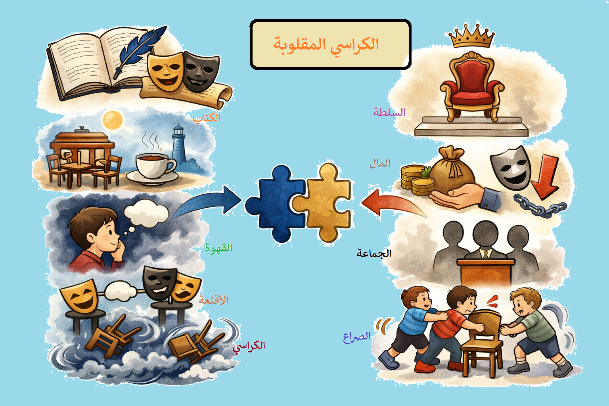

أقصوصة "الكراسي المقلوبة" لرضوان الكوني
الدرس الثالث: تحليل أقصوصة "الكراسي المقلوبة" من مجموعة "الكراسي المقلوبة" – 1973
التقديم
تُعدّ أقصوصة "الكراسي المقلوبة" للكاتب التونسي رضوان الكوني نصاً قصصياً رمزياً مكثفاً، ينتمي إلى الأدب الواقعي الناقد، ويوظف تقنيات السرد الحديثة لتفكيك آليات التنافس على السلطة في المجتمع. تصوّر الأقصوصة مشهدين بارزين: الأول في الشارع والبطحاء حيث قلبت الرياح الكراسي، والثاني في المدرج حيث يتنافس الصبية على الكراسي عبر التملق لصبي ثري. ومن خلال هذه اللوحات، يبني الكوني نصاً يتجاوز حدود الحكاية إلى التأمل في طبيعة الصراع الاجتماعي والسياسي.
يجمع النص بين براعة الأسلوب الرمزي وعمق الرؤية النقدية، محولاً لعبة الأطفال البريئة إلى مرآة ساخرة تعكس عبثية التنافس على السلطة، وانعدام العدالة، وهيمنة منطق التملق على حساب الكفاءة والجدارة.
📖 معلومات عن الكاتب
- الاسم: رضوان الكوني
- الجنسية: تونسي
- الميلاد: 13 مايو 1945 – الرقبة (تطاوين)
- التعليم: التعليم الابتدائي والثانوي في تونس العاصمة، شهادة ختم الدروس الترشيحية سنة 1966، إجازة في اللغة والآداب العربية سنة 1969، شهادة الكفاءة في البحث من جامعة باريس سنة 1975.
- المسار المهني: أستاذ في المعاهد الثانوية، مدير معهد ثانوي، متفقد للتعليم الثانوي ابتداءً من سنة 1985.
- النشاط الثقافي: عضو نادي القصة منذ 1976، عضو اتحاد الكتاب منذ 1980.
📚 مؤلفات الكاتب
- الكراسي المقلوبة (قصص) – الشركة التونسية للتوزيع، تونس، 1973
- النفق (قصص) – منشورات مجلة قصص، تونس، 1983
- الكتابة القصصية في تونس – منشورات قصص تونس، 1994
- رأس الدرب (رواية) – سعيدان للنشر، 1994
- صهيل الرمان (رواية) – الشركة التونسية للنشر، 1998
📚 معلومات عن النص
- العنوان: الكراسي المقلوبة
- الكاتب: رضوان الكوني
- الناشر: الشركة التونسية للتوزيع، تونس، 1973
- النوع الأدبي: أقصوصة (قصة قصيرة) تنتمي إلى الأدب الواقعي الرمزي الناقد.

ملخص الأقصوصة
تدور أحداث الأقصوصة حول السارد الذي يخرج من بيته منهكاً مكدوداً، فيجوب الشوارع والبطحاء حيث عصفت الرياح بالكراسي وقلبتها رأساً على عقب. يلجأ إلى مقهى فيجلس على كرسي مقلوب بعد أن كانت جميع الكراسي مقلوبة ما عدا كرسياً خلف المشرب. ثم ينتقل إلى المدرج حيث يشاهد مشهداً عجيباً: مجموعة من الصبية يتنافسون على الكراسي عبر التملق لصبي يبدو عليه الثراء، جالس على كرسي مرتفع. يحاول كل صبي أن يتقرب من "الصبي العالي" بعبارات المدح والثناء طمعاً في الفوز بكرسي. تنتهي اللعبة بأن يتقدم الجميع وينطقوا بنفس العبارة في آن واحد ("يا أعظم ملك في الدنيا، أرجو أن تجيزني بما تحلم به")، فلا يفوز أحد، في مشهد يكشف عبثية التنافس على السلطة حين يتحول الجميع إلى نسخ مكررة من التملق.
المصدر: رضوان الكوني، "الكراسي المقلوبة"، الشركة التونسية للتوزيع، تونس، 1973
شرح المفردات
| المفردة | الشرح |
|---|---|
| أجرجر | أسحب بتعب ومشقة، أمشي بثقل وإعياء |
| مكدوداً | متعباً مرهقاً، من الكدّ وهو التعب الشديد |
| البطحاء | الأرض المنبسطة الواسعة، المكان المكشوف |
| المشرب | مكان تقديم المشروبات في المقهى، المنضدة الرئيسية |
| المدرج | مكان متسع بصفوف متدرجة، مثل مدرجات المسارح والملاعب |
| الكراسي المقلوبة | الكراسي المنكوسة رأساً على عقب، ترمز لانقلاب الأحوال واضطراب النظام |
أسئلة الفهم – أفهم
1- تشكّلت أحداث الأقصوصة في لوحتين كبيرتين. ما هي حدود كلّ لوحة؟
اللوحة الأولى: تبدأ من وصف السارد لحالته النفسية والجسدية في الشارع والبطحاء، حيث الريح والعاصفة، وصولاً إلى دخوله المقهى وجلوسه على الكرسي المقلوب الوحيد خلف المشرب. حدودها المكانية: الشارع → البطحاء → المقهى.
اللوحة الثانية: مشهد الأطفال في المدرج وهم يتنافسون على الكراسي ويتسابقون في التملق للصبي صاحب الملابس الفاخرة الجالس على كرسي مرتفع، وصولاً إلى النهاية حيث ينطق الجميع بنفس العبارة فلا يفوز أحد. حدودها المكانية: المدرج بصفوفه.
2- ما هي أوجه الائتلاف وأوجه الاختلاف بين عناصر اللوحة الأولى وعناصر اللوحة الثانية؟
أوجه الائتلاف:
- حضور الكراسي كرمز مركزي في كلا اللوحتين.
- وجود حركة جماعية مضطربة: الريح في الأولى، الصبية في الثانية.
- سيطرة جو نفسي مشحون بالتوتر والانقلاب.
- حضور السارد كمراقب ومتأمل للمشهدين.
أوجه الاختلاف:
- اللوحة الأولى يغلب عليها وصف الطبيعة والفضاء الخارجي (الريح، العاصفة، البطحاء)، بينما الثانية يغلب عليها الحوار والتنافس الاجتماعي الرمزي.
- الأولى صامتة تعتمد الوصف، والثانية صاخبة تعتمد الحوار.
- الأولى تعكس انقلاباً قسرياً بفعل الطبيعة، والثانية تعكس انقلاباً إرادياً بفعل البشر.
- الأولى فردية (السارد وحده)، والثانية جماعية (الصبية والمتفرجون).
3- ما موضوع الحوار ومن أطرافه؟ وما النسق الذي اختاره له السارد؟ (سريع – حاد – بطيء – متصاعد – منحدر)
أطراف الحوار: الصبي الجالس على الكرسي المرتفع (الصبي العالي/الحاكم) من جهة، وصبيان المدرج والمتفرجون من جهة أخرى.
موضوع الحوار: التملق والتودد للحصول على امتيازات مادية ومعنوية (التقدم بالكرسي والحصول على الجائزة). وهو حوار يكشف آليات الوصول إلى السلطة عبر التذلل لا عبر الكفاءة.
النسق: متصاعد – يبدأ الحوار بلطف ومجاملة ("أجيزك بما تحلم به")، ثم يتحول تدريجياً إلى صراع جماعي محتدم وتنافس حاد، حتى يبلغ ذروته حين ينطق الجميع بنفس العبارة في وقت واحد، فينحدر النسق فجأة إلى العبث والفراغ.
4- تشكّلت الفضاءات في الأقصوصة وفق ثنائيتين بارزتين هما: الداخل والخارج من جهة والضيق والسعة من جهة ثانية. ما دور السارد في تشكّلهما؟ وما أثرهما في نفسه؟
ثنائية الداخل والخارج:
- الخارج: الشارع والبطحاء – فضاء مكشوف تعصف به الرياح، يرمز للانكشاف والاضطراب والتهديد.
- الداخل: المقهى والمدرج – فضاءات مغلقة نسبياً، ترمز للانغلاق الاجتماعي والصراع الخفي.
ثنائية الضيق والسعة:
- السعة: البطحاء والمدرج – فضاءات واسعة لكنها لا تمنح حرية حقيقية.
- الضيق: المقهى والكرسي – فضاءات ضيقة خانقة تعكس انحصار الذات.
دور السارد: يصف بدقة متناهية انتقاله بين هذه الفضاءات، مما يعكس ضيقه النفسي وتعبه الوجودي. التنقل بين الفضاءات ليس مجرد حركة جغرافية بل هو تجسيد لرحلة نفسية من الإرهاق إلى التأمل، ومن العزلة إلى مراقبة الجماعة.
أثرها في نفسه: تعمق الإحساس بالاغتراب والإنهاك، وتبرز التناقض بين الانغلاق الداخلي والانفتاح الخارجي، مما يضاعف من حدة التوتر النفسي.
5- ماذا نقل السارد من أعمال الشخصيات وأقوالها؟ هل كان في الموقع الذي يسمح له بنقل ما تمّ نقله؟ علّل جوابك ثم استخلص نوع هذا السارد.
ما نقله السارد: نقل أقوال الأطفال وأفعالهم بدقة بالغة، بما في ذلك حواراتهم الكاملة، حركاتهم (التقدم، التراجع، التملق)، وانفعالاتهم. كما نقل تفاصيل المكان (المقهى، المدرج) والزمان (لحظة العاصفة، لحظة التنافس).
موقعه من الأحداث: يبدو السارد مراقباً خارجياً يقف على مسافة من الأحداث، لكنه في الوقت نفسه يملك معرفة داخلية عميقة بما يجري في نفوس الشخصيات وما يدور من حوارات. هذا الموقع المزدوج (خارجي/داخلي) يمنحه قدرة فريدة على الوصف والتحليل.
نوع السارد: سارد عليم (التبئير الصفر) – فهو يعرف كل شيء: الأفعال، الأقوال، الأفكار، والمشاعر. يتجاوز معرفته ما تعرفه الشخصيات عن نفسها، وينتقل بحرية بين الفضاءات المختلفة. هذا النوع من السرد يمنح النص موضوعية ظاهرية وعمقاً تحليلياً.
6- ما هي عوامل انقلاب الكراسي وما الفرق بين هذه العوامل؟ ابحث في الدلالات الرمزية لهذه العوامل.
العامل الأول – الطبيعي (الخارجي القهري): الريح والعاصفة التي قلبت الكراسي في البطحاء. هذا العامل قسري لا إرادي، خارج عن سيطرة الإنسان، يمثل قوى الطبيعة والقدر التي تقلب الأحوال دون تدخل بشري.
العامل الثاني – الاجتماعي (الداخلي البشري): التنافس على السلطة والمكانة والجاه بين الصبية في المدرج. هذا العامل إرادي ناتج عن الطمع والطموح والصراع الاجتماعي.
الفرق بين العاملين: الأول خارجي قهري لا دخل للإنسان فيه، والثاني داخلي بشري ناتج عن إرادة الإنسان ونوازعه. الأول يعكس هشاشة النظام أمام الطبيعة، والثاني يعكس فساد النظام من داخله.
الدلالات الرمزية:
- الكراسي ترمز للسلطة والمناصب والجاه.
- انقلابها الطبيعي يرمز لزلزلة السلطة بفعل قوى خارجة عن السيطرة (ثورات، كوارث).
- انقلابها الاجتماعي يرمز لفساد آليات تداول السلطة، حيث يصعد غير الأكفاء عبر التملق.
- الكرسي المقلوب يرمز لانعدام الاستقرار وضياع المعايير.
7- ما رأيك في خاتمة الأقصوصة؟
الخاتمة بارعة ومفارقة ساخرة بامتياز: حين يتقدم الجميع وينطقون بنفس العبارة في وقت واحد، لا يفوز أحد. هذه النهاية تكشف عبثية التنافس على السلطة حين يتحول الجميع إلى نسخ مكررة من التملق، فتفقد المنافسة معناها وينهار النظام القائم على المحسوبية. الخاتمة تحمل دلالة عميقة: الصراع على الكراسي في مجتمع يفتقر إلى معايير عادلة ينتهي إلى الفراغ واللاجدوى. كما أنها تترك القارئ في حالة تأمل ساخر: الجميع يرددون نفس الكلمات، فلا يتميز أحد، وهذا هو جوهر النقد الاجتماعي في الأقصوصة.
💬 أسئلة نقاشية – أناقش
لو اعتبرنا السارد رمزاً لفئة المثقفين الواعين، فبمَ تفسّر اكتفاءه بالفُرجة على حركة الناس في كلّ من المقهى والبطحاء؟
اكتفاء السارد بالمشاهدة يعكس موقف المثقف الذي يعي الواقع ويفهم تناقضاته بعمق، لكنه يقف عاجزاً أو خائفاً أو محبطاً من التدخل. قد يكون هذا الموقف ناتجاً عن:
- الإحساس بالعجز أمام قوى أكبر (الطبيعة، السلطة، التقاليد).
- الخوف من الانخراط في صراع قد يفقده موقعه المحايد.
- الاقتناع بأن دور المثقف هو الرصد والتحليل لا الفعل المباشر.
- الإحباط من جدوى أي تدخل في واقع لا يتغير.
هذا الموقف يحمل نقداً ضمنياً لدور المثقف السلبي الذي يكتفي بالتأمل دون أن يتحول إلى فاعل في تغيير الواقع.
من المثقفين من يتعالى على المجتمع وينقطع إلى العلم والثقافة، ومنهم من يرى رسالة المثقف في الانخراط في المجتمع والقيام بدور الريادة في تغييره وإصلاحه. فأي الموقفين أسلم في نظرك؟ علّل جوابك.
الموقف الأسلم: الانخراط في المجتمع والقيام بدور الريادة في التغيير والإصلاح هو الأسلم والأكثر فاعلية. فالمثقف الذي ينعزل عن مجتمعه يفقد صلته بالواقع، وتتحول معرفته إلى ترف فكري غير منتج. أما المثقف المنخرط فيستطيع:
- توجيه المجتمع نحو القيم العادلة.
- تفكيك الخطابات المضللة وكشف الفساد.
- تحويل المعرفة إلى أداة للتغيير الإيجابي.
- بناء جسور بين الفكر والواقع المعيش.
لكن الانخراط لا يعني فقدان الاستقلال الفكري؛ فالمثقف الحقيقي هو من يحتفظ بمسافة نقدية تمكنه من التحليل الموضوعي حتى وهو في قلب المجتمع.
لماذا يتنافس الناس على الكراسي؟ ومتى يكون هذا التنافس شريفاً؟
أسباب التنافس على الكراسي: يتنافس الناس على الكراسي لأنها ترمز إلى السلطة، الجاه، النفوذ، والمكانة الاجتماعية. الكرسي يمنح صاحبه امتيازات مادية ومعنوية، ويضعه في موقع يمكنه من التحكم في غيره.
متى يكون التنافس شريفاً؟ يكون التنافس شريفاً حين يرتبط بـ:
- الكفاءة والجدارة: أن يصل الشخص إلى الكرسي لأنه الأقدر على تحمل المسؤولية.
- العدالة وتكافؤ الفرص: أن تتاح للجميع فرصة المنافسة دون محسوبية.
- خدمة الصالح العام: أن يكون هدف الوصول إلى الكرسي هو الإصلاح وخدمة المجتمع لا تحقيق المكاسب الشخصية.
- النزاهة: أن تتم المنافسة بوسائل شريفة دون تملق أو غش أو استغلال للنفوذ.
📝 تدريبات
1- حوّل المقاطع التي وردت في شكل خطاب مباشر إلى خطاب غير مباشر وغيِّر ما يجب تغييره.
المثال: قال الصبي العالي: "أجيزك بما تحلم به."
→ قال الصبي العالي إنه سيجيزه بما يحلم به.
تحويلات إضافية:
- قال الصبي: "يا أعظم ملك في الدنيا."
→ نادى الصبي الصبيَّ العالي معتبراً إياه أعظم ملك في الدنيا. - قال الصبي العالي: "ماذا تريد؟"
→ سأل الصبي العالي الصبيَّ ماذا يريد. - قال الصبي: "أرجو أن تجيزني."
→ قال الصبي إنه يرجو أن يجيزه.
2- لو طلبت إدارة المدرسة أن يمثّل تلاميذ كل فصل تلميذ في مجلس من المجالس. ما الطريقة التي تراها لاختيار هذا المسؤول؟ وكيف يكون التداول على المسؤولية؟ حرّر في ذلك خمسة أسطر.
الطريقة الأنسب لاختيار ممثل الفصل هي الانتخاب الديمقراطي المباشر بين التلاميذ، حيث يرشح كل تلميذ نفسه أو يرشحه زملاؤه، ثم تُجرى انتخابات سرية نزيهة تحت إشراف المعلم. أما التداول على المسؤولية فيكون دورياً كل فصل دراسي، بحيث لا يحق للممثل أن يشغل المنصب لفترتين متتاليتين. هذا يضمن مشاركة أوسع للتلاميذ في تحمل المسؤولية، وينمي روح القيادة لدى الجميع، ويمنع احتكار التمثيل من قبل فئة قليلة. كما يعزز هذا النظام قيم الديمقراطية والشفافية والعدالة في الوسط المدرسي.
📚 أنشطة لغوية ومعجمية
بمناسبة هذا البحث
اذكر - بالاستعانة بما درست في مادتي التاريخ والتربية المدنية - أنظمة الحكم في العالم وكيفية التداول على السلطة في بعض البلدان.
أنظمة الحكم في العالم:
- النظام الديمقراطي: يتداول فيه المواطنون على السلطة عبر انتخابات حرة ونزيهة (مثل: تونس، فرنسا، الولايات المتحدة).
- النظام الملكي الدستوري: يحكم فيه الملك وفق دستور، وتُدار الحكومة عبر انتخابات (مثل: المملكة المتحدة، إسبانيا، المغرب).
- النظام الملكي المطلق: تتركز السلطة بيد الملك وحده دون تداول انتخابي.
- النظام الرئاسي: ينتخب فيه الرئيس مباشرة من الشعب ويجمع بين رئاسة الدولة والحكومة.
- النظام البرلماني: تنتخب فيه الحكومة من الأغلبية البرلمانية.
المعنى المصاحب
ما هي المعاني المصاحبة لكلمتي "كرسي" و"السيد"؟
كرسي: يصاحبه معاني: السلطة، الحكم، المنصب، المكانة، الجاه، الاستقرار، السيطرة، الهيمنة. وفي السياق السلبي: الاحتكار، الإقصاء، الفساد.
السيد: يصاحبه معاني: السيادة، الهيمنة، الرياسة، الاحترام، التبجيل، الطاعة، الامتثال. وفي السياق السلبي: الاستبداد، التسلط، الخضوع.
المعجم
اشرح: أجرجر – مكدوداً
| الكلمة | المعنى |
|---|---|
| أجرجر | أسحب بتعب ومشقة، من الجرّ وهو السحب بثقل. يُقال: جرجر رجليه إذا مشى متثاقلاً من التعب. |
| مكدوداً | متعباً مرهقاً منهك القوى، من الكدّ وهو العمل الشاق المتواصل الذي ينهك الجسد. |
تعبير
تعاون مع بعض رفاقك على تشخيص لعبة الكراسي بعد حفظ الحوار وإعداد الفضاء اللازم.
يمكن إعداد مشهد تمثيلي يحاكي لعبة الكراسي في الأقصوصة: يُخصص كرسي مرتفع للصبي العالي، وتُوزع بقية الكراسي في المدرج. يتحرك الصبية باتجاه الكرسي العالي وهم يرددون عبارات التملق الواردة في النص، حتى يصل الجميع إلى نفس العبارة في وقت واحد. يمكن إضافة لمسات مسرحية كالإضاءة والموسيقى لتعزيز الجو الرمزي للمشهد.
🌟 ومضة لغوية
تصريف الأفعال المعتلة
"وبَقُوا ينتظرون الجائزة"
- بَقُوا: فعل ماض مسند إلى ضمير الغائبين.
- بَقِيَ: فعل ماض مسند إلى ضمير الغائب، وزنه (فَعِلَ).
- في المضارع: هم يَبْقَوْنَ – هو يَبْقَى على وزن يَفْعَلُ.
أوزان الأفعال:
- سَعَى وزنه (فَعَلَ) – يَسْعَى وزنه (يَفْعَلُ) – هم سَعَوْا – هم يَسْعَوْنَ.
- رَمَى وزنه (فَعَلَ) – يَرْمِي وزنه (يَفْعِلُ) – هم رَمَوْا – هم يَرْمُونَ.
- دَنَا وزنه (فَعَلَ) – يَدْنُو وزنه (يَفْعُلُ) – هم دَنَوْا – هم يَدْنُونَ.
تطبيق: أسند الأفعال التالية إلى ضمير الغائبين في الماضي ثم في المضارع:
| الفعل | الماضي (هم) | المضارع (هم) |
|---|---|---|
| رَضِيَ | رَضُوا | يَرْضَوْنَ |
| مَشَى | مَشَوْا | يَمْشُونَ |
| رَعَى | رَعَوْا | يَرْعَوْنَ |
| سَمَا | سَمَوْا | يَسْمُونَ |
🌟 ومضة بلاغية
الفصل والوصل
النص: "في أعلى السُّلَّم مساحةٌ رخاميّةٌ جميلةٌ فُرِشَ وسطها ببساط ثمين"
لم يصل الكاتب المركّب الإسنادي الفعلي المعطوف على "رخامية جميلة" بالواو. الفصل هنا واجب لأن الجملة الثانية (فُرِشَ وسطها ببساط ثمين) هي نعت للجملة الأولى (مساحة رخامية جميلة)، والجملة إذا وقعت نعتاً لمنكّر لا تُعطف بالواو بل تُفصل.
القاعدة: الفصل يكون واجباً بين الجملتين إذا كانت الثانية نعتاً للأولى، أو بدلاً منها، أو توكيداً لها، أو إذا اتحدتا في الخبرية والإنشائية.
📖 ورقة لغوية – الاستثناء
حاشا – عدا – خلا
النص: "كانت جميعُ الكراسيّ مقلوبةً ما عدا كرسيًّا خلفَ المشربِ"
- المركّب المسطّر مركّب بالاستثناء، وظيفته اسم كان.
- المستثنى منه: جميع الكراسي.
- أداة الاستثناء: ما عدا.
- المستثنى: كرسياً خلف المشرب.
القاعدة: عدا وخلا وحاشا أدوات استثناء تستعمل في الاستثناء التام (الذي يذكر فيه المستثنى منه). يكون المستثنى بعدها منصوباً. إذا سُبقت بـ"ما" المصدرية تعين النصب، وإذا لم تسبقها "ما" جاز نصب المستثنى وجره.
تطبيق:
1- استثنِ المهملين من التلاميذ الناجحين مستعملاً إحدى الأدوات: عدا، خلا، حاشا.
- نجح جميع التلاميذ عدا المهملينَ (أو: عدا المهملينِ – يجوز النصب والجر).
- نجح جميع التلاميذ خلا المهملينَ (أو: خلا المهملينِ).
- نجح جميع التلاميذ حاشا المهملينَ (أو: حاشا المهملينِ).
2- "زرت جميع المناطق ببلادنا وبقيت لي المناطق الصحراوية" – عبّر عن المعنى السابق مستعملاً الاستثناء بـ (ما عدا).
زرت جميع المناطق ببلادنا ما عدا المناطقَ الصحراوية.
📖 ورقة منهجية – التبئير أو البؤرة
أنواع التبئير
تُعد المعلومات والأحداث التي تحتويها رواية أو أقصوصة نتيجة لاختيارات عديدة استقرت في ذهن المؤلف. ومن بين هذه الاختيارات زاوية النظر التي ينظم من خلالها عملية القص. وزوايا النظر متعددة:
- التبئير الداخلي: يقوم فيه السارد بعملية القص وقد حل بداخل الشخصية التي يتحدث عنها، فيكشف أفكارها الشخصية ومشاعرها. هذه الزاوية تجعل الشخصية قريبة جداً من القارئ إلى درجة التماهي معها أحياناً.
- التبئير الخارجي: يقوم فيه السارد بعملية القص وهو خارج الشخصيات، لا يقدم الكثير من المعلومات عن أعمالها أو الحوارات التي تدور بينها، وتبقى أفكارها ومشاعرها مجهولة لا يعرفها القارئ إلا من خلال أقوالها أو أقوال بعضها عن بعض.
- التبئير الصفر (درجة الصفر من التبئير): يتمثل في سرد كل شيء حتى لكأن السارد عليم بكل ما يجري في القصة، يعرف ما يحدث في مختلف الأوقات والأماكن، ويعلم ما يدور بخلد الشخصيات من مشاعر وأفكار ومشاريع، بل إن ما يعرفه قد يتجاوز ما تعرفه الشخصيات عن أنفسها مجتمعة.
في أقصوصة "الكراسي المقلوبة": اعتمد السارد على التبئير الصفر، فهو يعرف كل شيء: يصف حالته النفسية، وينقل حوارات الصبية بدقة، ويكشف عن دلالات المشاهد. هذا النوع من التبئير يمنح النص موضوعية ظاهرية وعمقاً تحليلياً، ويتيح للقارئ رؤية بانورامية شاملة للمشهدين: الخارجي (البطحاء والمقهى) والداخلي (المدرج والمنافسة).
✨ القسم الأوّل: البرنامج السردي والبناء الزمني
بناء الأقصوصة – لوحتان سرديتان
- اللوحة الأولى: السارد في الشارع والبطحاء، الريح تقلب الكراسي، الدخول إلى المقهى، الجلوس على الكرسي المقلوب.
- اللوحة الثانية: الانتقال إلى المدرج، مشاهدة الصبية وهم يتنافسون على الكراسي، لعبة التملق، النهاية المفارقة.
تقنية التضاد: توظيف ثنائيات متقابلة (الداخل/الخارج، الضيق/السعة، الصمت/الضجيج، الفرد/الجماعة) لتعميق البعد الرمزي للنص.
تنظيم الأحداث والزمن
- الحدث الأساسي: انقلاب الكراسي – بشقيه الطبيعي (الريح) والاجتماعي (التنافس).
- الحدث الكمالي: وصف الطبيعة، المقهى، وجوه الناس، تفاصيل المكان.
- الزمن: زمن متصل ينتقل من لحظة الخروج إلى لحظة المشاهدة، مع بطء في الإيقاع (الوصف) وتسارع في موضع الحوار.
👤 القسم الثاني: بناء الشخصية والرؤية السردية
الشخصيات ومقومات الهوية
رئيسية:
- السارد: مثقف واعٍ، منهك ومكدود، مراقب متأمل، يرمز لفئة المثقفين الذين يكتفون بالرصد دون الفعل.
- الصبي العالي: رمز للسلطة، جالس على كرسي مرتفع، يملك قرار منح الامتيازات أو حرمانها.
ثانوية:
- صبيان المدرج: رمز للجماهير المتنافسة على السلطة عبر التملق لا الكفاءة.
- المتفرجون: الجمهور السلبي الذي يكتفي بالمشاهدة.
الأحوال النفسية والأعمال المؤثرة
السارد: إنهاك جسدي، قلق وجودي، شعور بالاغتراب، تأمل ناقد. الصبية: طمع، تملق، تنافس، خضوع. الصبي العالي: سيطرة، تعالٍ، تحكم.
الأعمال المؤثرة: انقلاب الكراسي، دخول السارد المقهى، بدء لعبة التنافس، النهاية الجماعية.
🖼 القسم الثالث: الوصف والرمز – تكثيف الدلالة
الرموز والصور المركزة
- الكراسي المقلوبة: الرمز المركزي – تدل على انقلاب الأحوال، واضطراب النظام، وفساد آليات تداول السلطة.
- الريح والعاصفة: ترمز للقوى الخارجة عن السيطرة التي تقلب الأنظمة (ثورات، كوارث، تحولات قهرية).
- الكرسي المرتفع: رمز للسلطة العليا التي يتبارى الجميع في التملق لها.
- المدرج: رمز للمجتمع الطبقي حيث تتوزع المواقع حسب القرب من السلطة.
- لعبة التملق: مرآة ساخرة لآليات الوصول إلى المناصب في مجتمع يفتقر إلى معايير الجدارة.
اللغة والأسلوب
- ثنائية الوصف والحوار: الوصف بالفصحى الأدبية المتأنية، والحوار بالعامية التونسية المكثفة.
- طبقات المعجم: معجم حسي (الريح، العاصفة، التعب) ومعجم فكري (الكرسي، السلطة، التنافس)، يترجم ازدواجية النص بين الواقعي والرمزي.
- المفارقة الساخرة: توظيف النهاية الجماعية (نطق الجميع بنفس العبارة) لتجسيد عبثية الصراع.
💡 القسم الرابع: القضايا المضمونية
السلطة والتنافس – المثقف والمجتمع – العدالة والفساد – الفرد والجماعة
- السلطة والتنافس: الكراسي ترمز للسلطة، والتنافس عليها يتم عبر التملق لا الجدارة، مما يعكس أزمة سياسية واجتماعية.
- المثقف والمجتمع: السارد يمثل المثقف الواعي الذي يرصد الواقع لكنه لا يتدخل، مما يطرح سؤال دور المثقف في التغيير.
- العدالة والفساد: غياب معايير عادلة في توزيع "الكراسي"، وهيمنة منطق المحسوبية والتملق.
- الفرد والجماعة: الفرد (السارد) في مواجهة الجماعة (الصبية)، وعزلة الفرد الواعي وسط الجماعة المنخرطة في الصراع.
📖 القسم الخامس: السارد والخطاب
نوع السارد وسمات الخطاب
نوع السارد: سارد عليم (تبئير صفر) – يصف الأحداث ويكشف الأعماق النفسية، وينتقل بحرية بين الفضاءات المختلفة. يمنح النص موضوعية ظاهرية وعمقاً تحليلياً.
سمات الخطاب: مزج بين الفصحى الأدبية والعامية التونسية، حوارات قصيرة مشحونة، وصف حسي دقيق، نهاية مفارقة ساخرة.
حركة عين السارد: من الخارج (الشارع والبطحاء) إلى الداخل (المقهى والمدرج)، ومن الفردي (حالة السارد النفسية) إلى الجماعي (مشهد الصبية)، في حركة دائرية تعكس التحول من التأمل الذاتي إلى الرصد الاجتماعي.
الهم الأساسي: إبراز عبثية التنافس على السلطة، وفضح آليات التملق والفساد، وطرح سؤال دور المثقف في المجتمع.
📚 التعرف إلى المحاور الأساسية في الأثر
الحقول المعجمية والموضوعات
الحقول المعجمية: حقل السلطة (الكرسي، الكراسي، السيد، الجائزة)، حقل الطبيعة (الريح، العاصفة، البطحاء)، حقل الجسد والتعب (أجرجر، مكدوداً، منهك)، حقل الاجتماع (الصبية، المتفرجون، المدرج)، حقل الانفعال (الطمع، الخوف، التملق، السخرية).
الموضوعات المطروقة: السلطة والتنافس، المثقف والمجتمع، العدالة والفساد، الفرد والجماعة، الطبيعة والإنسان.
العناوين المقترحة
"انقلاب الكراسي"، "لعبة السلطة"، "المدرج والكرسي"، "ريح التغيير وعبث التنافس"، "الكراسي المقلوبة: مرآة المجتمع".
🧩 الخطاطة البصرية
في المركز دائرة تمثّل تفاعل الجوانب الفنية والمضمونية في الأقصوصة، تتفرّع منها مربعات فارغة مخصصة لتدوين الأفكار، وتحيط بها رموز تعبّر عن عناصر الفن (الكتاب، القهوة، الأقنعة، الكراسي المقلوبة) وعن القضايا المضمونية (السلطة، المال، الجماعة، الصراع)، وتتصل جميعها بأسهم متقابلة تبرز اندماج الشكل الفني بالمعنى الاجتماعي في النص.
🧩 الهيكل العام للمقال
| القسم | المحتوى المقترح | الهدف |
|---|---|---|
| المقدمة | تقديم الأقصوصة وسياقها، التعريف بالكاتب، إبراز أهمية الجانب الفني والمضموني، طرح الإشكالية. | تمهيد للقارئ. |
| الجانب الفني | تحليل البناء السردي، الرؤية السردية، الحوار، الوصف، الرمز، اللغة والأسلوب. | إبراز براعة الكاتب. |
| الجانب المضموني | السلطة والتنافس، المثقف والمجتمع، العدالة والفساد، الفرد والجماعة. | الكشف عن الدلالات. |
| الخاتمة | العلاقة بين الشكل والمضمون، القيمة الفنية والإنسانية للأثر، تأمل نقدي شامل. | تركيب النتائج. |
🎨 الجانب الفني (الأساليب ومقومات القص)
السرد – الوصف – الحوار – الرمز – اللغة
- السرد: اعتماد السارد العليم والمزج بين الوصف الخارجي والتحليل النفسي.
- الوصف: وصف الطبيعة (العاصفة، الريح) ووصف المكان (المقهى، البطحاء، المدرج) بدقة حسية.
- الحوار: حوار مباشر بين الأطفال، متصاعد يكشف التنافس والسلطة.
- الرمزية: الكراسي رمز للسلطة، الانقلاب رمز لعدم الاستقرار، التملق رمز للفساد.
- مقومات القص: وحدة الحدث، التكثيف، المفارقة، الخاتمة الساخرة.
- اللغة: مزيج من الفصحى والعامية يمنح واقعية وحيوية.
💡 الجانب المضموني (القضايا والدلالات)
السلطة والتنافس – المثقف والمجتمع – العدالة والفساد – الفرد والجماعة
- السلطة والتنافس: الكراسي رمز للسلطة، والتنافس عليها يتم عبر التملق لا الجدارة.
- المثقف والمجتمع: السارد يمثل المثقف الواعي الذي يرصد لكنه لا يتدخل.
- العدالة والفساد: غياب معايير عادلة في توزيع "الكراسي".
- الفرد والجماعة: عزلة الفرد الواعي وسط الجماعة المنخرطة في الصراع.
🧠 التركيب النهائي
تفاعل الشكل والمضمون يجعل الأقصوصة لوحة فنية متكاملة: البناء الثنائي المتضاد يخدم فكرة الانقلاب والاضطراب، الصوت السردي العليم يمنح مصداقية تحليلية، الرموز (الكراسي، الريح، المدرج) تختزل الصراع الاجتماعي والسياسي، واللغة المزدوجة تعمق الإحساس بالواقع. "الكراسي المقلوبة" ليست مجرد حكاية عن كراسي قلبتها الريح، بل مرثاة ساخرة لمجتمع يتبارى أفراده على السلطة بالتملق لا بالكفاءة، وينتهي بهم الصراع إلى العبث والفراغ.
🖋️ المقال النقدي حول أقصوصة "الكراسي المقلوبة"
المقدمة
تُعدّ الأقصوصة من أبرز الأجناس السردية القصيرة التي تلتقط لحظة أو موقفاً مكثفاً لتكشف من خلاله عن أبعاد إنسانية واجتماعية عميقة. وفي هذا السياق تأتي أقصوصة "الكراسي المقلوبة" للكاتب التونسي رضوان الكوني (مواليد 1945) لتقدّم مشهداً رمزياً يعرّي واقع التنافس على السلطة ويكشف عن عبثية الصراع الاجتماعي، جامعاً بين أسلوب فني متقن وقضايا مضمونية لافتة. تطرح الأقصوصة سؤالاً مركزياً: كيف استطاع الكاتب أن يجعل من لعبة الأطفال البريئة مرآة ساخرة لفساد آليات الوصول إلى السلطة في المجتمع؟
🎨 الجانب الفني: الأساليب ومقومات القص
- البناء السردي: اعتمد الكاتب على لوحتين متقابلتين (البطحاء والمقهى من جهة، والمدرج من جهة أخرى) مما خلق تضاداً فنياً يعمق الدلالة.
- السارد: سارد عليم (تبئير صفر) يصف الأحداث بدقة ويكشف عن أبعادها النفسية والاجتماعية.
- الوصف: برز في تصوير العاصفة والبطحاء والمقهى، حيث شكل الوصف خلفية طبيعية تعكس اضطراب الواقع الاجتماعي.
- الحوار: جاء مباشراً ومتدرجاً، متصاعداً من المجاملة إلى الصراع، مما أبرز دينامية التنافس بين الأطفال.
- الرمزية: الكراسي رمز للسلطة، والانقلاب رمز لعدم الاستقرار، والتملق رمز للفساد الاجتماعي.
- مقومات القص: وحدة الحدث، التكثيف، المفارقة، والخاتمة الساخرة التي تكشف عبثية التنافس حين ينطق الجميع بنفس العبارة فلا يفوز أحد.
💡 الجانب المضموني: القضايا والدلالات
- السلطة والتنافس: النص يعكس واقع التنافس على المناصب والسلطة، حيث يسعى الجميع إلى التقدم عبر التملق لا عبر الكفاءة.
- المثقف والمجتمع: السارد يمثل المثقف الواعي الذي يكتفي بالمشاهدة، مما يطرح سؤال دور المثقف في الإصلاح.
- العدالة والفساد: يفضح النص سلوكيات الغش والانتهازية واستغلال النفوذ، ويكشف عن غياب قيم العدالة والجدارة.
- الفرد والجماعة: الأطفال يمثلون المجتمع، والكرسي يمثل السلطة، مما يجعل اللعبة انعكاساً ساخراً لواقع سياسي واجتماعي مأزوم.
التركيب والخاتمة
تكشف أقصوصة "الكراسي المقلوبة" عن تلاحم الجانب الفني والمضموني في نص قصير مكثف، حيث يوظف الكاتب أساليب السرد والوصف والحوار والرمز ليعكس قضايا اجتماعية وأخلاقية عميقة. إنها نص ساخر وناقد يفضح عبثية التنافس على السلطة ويثير وعي القارئ بضرورة إعادة النظر في قيم المجتمع. وهكذا يثبت النص أن الأقصوصة، رغم قصرها، قادرة على حمل رؤية نقدية شاملة ومؤثرة.
✎ ✍ ✎